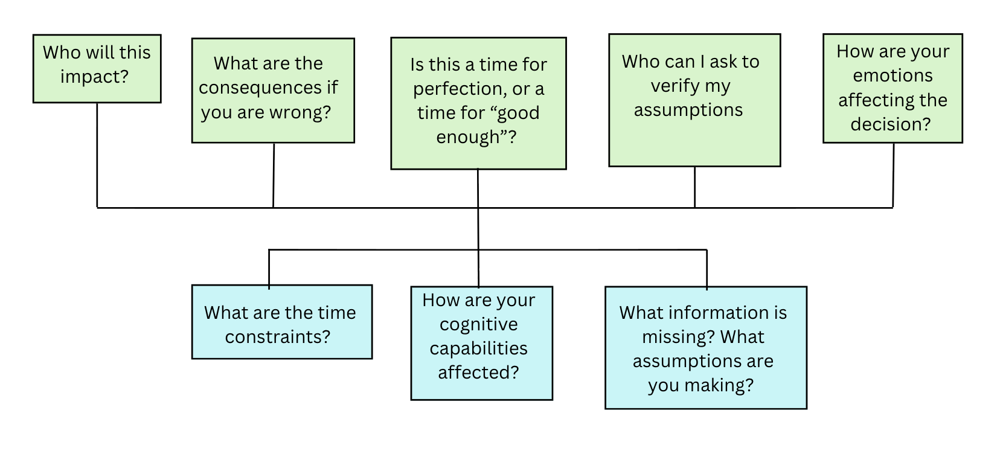

“It’ll do.” – A Reflection on Decision Making
Introduction
We laud homo-economicus, the perfectly rational man, for his ability to make logical judgements. Yet, in my experience, the difficulty wasn’t necessarily making the right decision but knowing when to make it efficiently and when to ask for help. My work placement as an administrative assistant for the Heavy Equipment and Transportation Department of Burning Man challenged my understanding of decision-making and what an optimal choice looks like. I will analyze the decisions I made and ground them in decision-making and reflexivity literature. Initially, I felt paralyzed by making small decisions. Slowly, and with help from my manager, I became more comfortable making practical decisions and learning through action. However, by the end, I was prioritizing action over analysis, and made a poor decision based on unverified assumptions. Good decisions depend on matching the level of verification to the stakes. Throughout this paper, I use Cunliffe’s (2016) critical reflexivity framework as a foundation to examine not only the outcomes of my decisions, but also the assumptions that shaped them. Across my decisions, the quality of a choice depended not only on whether I was deliberating unnecessarily, but also on whether I verified my assumptions.
My early research was into the structure of temporary organizations. Burning Man, as a seasonal event, is inherently characterized not just by geographical temporality, but uncertainty, rapidly changing conditions, and limited opportunities to learn from pre-existing structures. Lundin and Söderholm (1995) helped me process my experiences and place them into context. They emphasize that within these structures, action is often prioritized over prolonged deliberation. Simon (1955) and (1956) introduce rationality as bounded, and the concept of satisficing.

Early Decisions and Perfection Paralysis
It turns out that Geronimo is delayed, he won’t get here until the third week. Kirby and Cuervo asked me to handle the transpo logs until he arrives. At first, I was proud to take it on, but now I’m not sure exactly how to go about it. I think I’ll try a few different things and keep whatever sticks. I’m afraid that I’ll set it up wrong and we’ll have to live with it for the rest of the season (Week 1 Journal).
A transpo manager was delayed, and I was given the opportunity to take on a small role. I needed to collect transportation logs at the end of the day and print new ones when necessary. I brainstormed and tried too many options for handing the logs in. The result was confusion. My decision process was based on many of the assumptions I made at St Andrews, rather than grounded in the context of my decision. For instance, the need to draft, review, and edit ideas, rather than simply taking action. I was trying to go about it as an academic, not as a professional. Drivers were left knocking on my door asking where to put logs or insisting that they had left them in my office or on a clipboard. Due to my multiple iterations, a task that had previously been simple was suddenly very complicated. And the drivers felt that it was belittling their work.
Hard day today. Raincat came into the office to ask whether the logs were even used. I think he and Bucket think that the forms are just busywork (Week 1 Journal).
The perceived value of their task was reduced because I hadn’t been proactive in mine. I didn’t realize that my task didn’t need to be perfect, it just needed to be consistent and clearly communicated. I was trying to be thoughtful and methodical, and it inadvertently resulted in a bad decision. I was treating a relatively straightforward administrative task as a problem that required extensive deliberation. A log system matters only if people can find and use it quickly, especially within a temporary organization with little margin for onboarding. My failure impacted the efficiency and morale of my team. I wasn’t trusting myself to implement something workable, and it affected my team's trust in me. Applying Figure 1 in hindsight, the question 'Is this a time for perfection, or a time for good enough?' would have helped me realize that the logs needed to be consistent rather than optimal, and 'How are your emotions affecting the decision?' would have exposed that my fear of getting it wrong was driving the repeated changes.
In my mind, I was exaggerating the consequences of a minor choice. I started to notice this pattern within myself.
This afternoon I spent a full 30 minutes agonizing over where to put screws to hang our new whiteboard. I almost feel paralyzed (Week 2 Journal).
I assumed everyone else knew exactly what they were doing and had done it before. I reflected on it. Why was I afraid of permanence? Was it linked to a desire for perfection, or simply a fear of change? Being a competent individual is important to my sense of self. I think I was afraid of making mistakes and internally questioning myself.
Kirby just wrote the master to-do list on the whiteboard. I have some free time today, but I’m really not sure where to start. I could hang up the bleachers, but I would need someone to help me. I’d like to learn how to do it. I’m trying to imagine what an ideal employee in my situation would do. They’d be able to take charge. They’d be able to catch anything that was thrown at them (Week 1 Journal).
I wanted to be that person. But I hesitated, and thus others did the whiteboard tasks, and I fulfilled my minimum duties. When I reflected on my journal later using Cunliffe’s (2016) idea of reflexivity, I wondered why my ideal employee didn’t ask for help or include teamwork. My internal model for decision-making didn’t include when to ask for help. My association was that competent decisions were not collaborative.
Growing Capability and Communication
Cuervo, the head of the department, often came in to joke with my immediate boss and to borrow cigarettes.
He asked me if I was happy with my position. I said that I wasn’t sure that I was being helpful enough. He told me that this job was my oyster. If there was anything I wanted to learn, there was someone who wanted to teach me. Hell, if I wanted to learn something, he would pay them extra hours to train me (Week 2 excerpt).
Rather than reassuring me based on my performance, Cuervo made learning an implicit part of the job, and showed me the department cared about investing in my human potential. It enabled me to make choices and empowered me to ask people to take time out of their days to help me. Part of my fear had been based on my insecurity about my lack of practical knowledge. Just that permission to ask for help made me feel like I could act with less fear and try new projects. My view of competence shifted from hyper-independence to the ability to learn and contribute to team projects.
Over time, based on the context of my situation and growing rapport with the team, I began to understand that decisions did not need to be flawless to be useful. Rather, they needed to be workable and communicated clearly.
Pynecone phoned today to tell us they are changing the way they do radio collection. This might be tricky, since they need to be in the field all day. I think I’ll make a station outside my office for people to drop their radios off and check their name off. I can bring them to Pynecone every morning. I’ll send her a Slack, then we’ll be off to the races (Week 3 Journal).
When I was given an unexpected task, collecting radios as people left and went home, I simply printed a list of everyone’s name, hung it next to a basket, and made an announcement. I didn’t know every detail, so I messaged the radio team to confirm my assumptions. My mental process went: (a) identify a workable solution, (b) ask for a targeted information check, (c) proceed once it was confirmed that the system was sound. Simon’s (1956) concept of bounded rationality helps explain why a workable solution can be preferable to prolonged deliberation. Rather than attempting to identify the best possible radio collection system, I developed a simple approach that appeared to meet the task’s requirements and checked it with the team responsible for radios. This was a form of satisficing: I sought a sufficiently effective solution rather than an optimal one.
Near the end of the term, when the take-down list was written, I picked the first thing on the list, “take down privacy wall”. And I went and looked at it, verifying my assumptions. It was held together with staples and screws. I knew how to take those out. Though I had never done this task, I powered myself with a ladder and a screwdriver and started figuring it out. Team members who were walking by pulled up ladders of their own and started to help. When we reached the next step, the one beyond my wheelhouse, they showed me how to remove the posts holding the structure in place. The privacy wall showed me that I did not need to understand the entire task before beginning. I could start with the steps I understood, learn through practice, and ask for help when I reached the limits of my knowledge.
Limits and Conclusion
Granted, a quick decision isn’t necessarily a smart decision. Near the end of my term, part of the electrical grid was being taken down, and one of the RV’s would need to be unplugged. Instead of finding a power adapter or doing further research, I remembered seeing a manager leave that morning and pointed towards his RV. Little did I know, his wife, the manager of a different department, would be there for an additional few days. I was able to get the mistake rectified before it caused her any difficulty, but it was a mistake that came with a stern talking to.
I feel so ashamed. I unplugged Molly’s RV without even checking with Kirby to see if she was still here (Week 4 Journal).
My decision was influenced by wanting to retain the competent identity I was rebuilding for myself. I wanted to be the one to help the power team. I liked feeling like I had decision-making power, like my ideal employee from Week 1. I mistakenly treated my confidence as verification. The impact on her life could have been high, and it warranted further research. Unlike my previous decision, I didn’t take the time to double-check my assumptions with the relevant team, and I paid the price. Figure 1 helps me see what I skipped. I never asked, 'Who will this impact?' or 'What are the consequences of being wrong?', so I did not recognize that a manager in another department would bear the cost of my unverified assumption.
Through my work placement, my understanding of decision-making changed, and I learned some truths about myself to work on. Learning to ask for help was what made quick decisions safe, because satisficing worked when I verified my assumptions with others and failed when I relied on my own. I don’t feel ashamed of my indecision early in the placement. I was unfamiliar, insecure, and trying to do the absolute best I could. I just needed the reminder that sometimes the best you can do is just having it done. Back in St Andrews, my placement module peers echoed this sentiment. Their supervisors didn’t need to be seeing perfection; they just needed to be seeing progress. In future employment, I want to avoid spending disproportionate time refining low-stakes decisions, while remaining willing to seek advice or verify assumptions when the consequences justify it. Sometimes, the best decision is simply to get the job done. At other times, doing the job well means pausing to ask one more question. I hope to carry forward the principle I learned during my placement: know when “it’ll do” is enough, and when it isn’t.
Works Cited
- Cunliffe, Ann L. “‘On Becoming a Critically Reflexive Practitioner’ Redux: What Does It Mean to Be Reflexive?” Journal of Management Education, vol. 40, no. 6, 22 Sept. 2016, pp. 740–746, 10.1177/1052562916668919.
- Lundin, Rolf A., and Anders Söderholm. “A Theory of the Temporary Organization.” Scandinavian Journal of Management, vol. 11, no. 4, Dec. 1995, pp. 437–455, www.sciencedirect.com/science/article/pii/095652219500036U, 10.1016/0956-5221(95)00036-u. Accessed 18 Oct. 2026.
- Simon, Herbert. “A Behavioral Model of Rational Choice.” The Quarterly Journal of Economics, vol. 69, no. 1, 1955, pp. 99–118, www.jstor.org/stable/1884852, https://doi.org/10.2307/1884852. Accessed 18 Oct. 2026.
- Simon, Herbert. “Rational Choice and the Structure of the Environment.” Psychological Review, vol. 63, no. 2, 1956, pp. 129–138, https://doi.org/10.1037/h0042769.